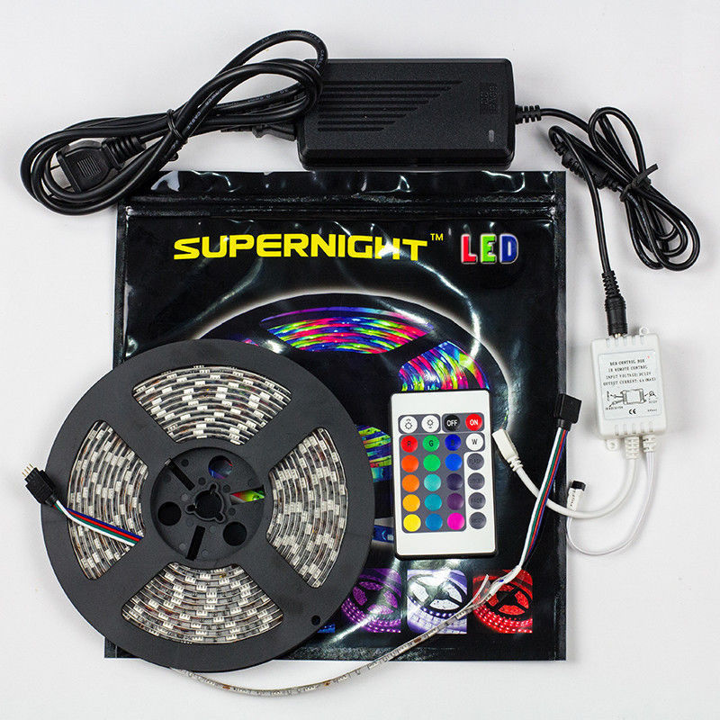

International Space Station overhead pass notifications
(using Python and Arduino to control cheap RGB LED strips)
I recently bought some cheap RGB LED strip lights, which included 16.4ft of weatherproof RGB LEDs, an infra-red receiver unit to control the strip, an AC power adapter and a 44 button remote control all for about $20. LEDs are not addressable but they are easy and cheap to find. As you can see from the image below these were 'Supernight' branded and are easy to find online.
At first I thought they were cool just being used to light up my office, but soon thought I'd have a go at controlling them using an Arduino. I did not want to damage the remote or the receiver so looked at using an IR LED hooked up to my ageing Arduino Duemilanove to control the light strip.
Using the excellent IRremote library from Ken Shirriff I was easily able to record the signals from the original remote control unit and play them back using an Arduino. So far so good but I needed a project.
Enter the International Space Station (ISS).
Using the great OpenNotify API by Nathan Bergey I created some scripts and Arduino firmware to control the strip lights according to the current position of the ISS! I have seen similar projects such as this before (in fact Nathan has one up on Kickstarter which OpenNotify was created to support) but I thought I'd use what I already had lying around!
The included iss_notification.py script uses the open source OpenNotify API to retrieve calculated overhead passes of the ISS for a given observation position defined by latitude/logitude and altiude.
Retrieved passes get printed to the terminal window and optionally simple 'status' codes can be sent over a serial port (which is specified by the -s or --serial command line option. This is intended to be used in order to send some physical indication of upcoming ISS passes and how far away in time they are. In my case, I'm using receiving these commands with an Arduino and using it to replay the IR codes to control the LEDs.
The script uses are series of simple states, which depending on how far the ISS is from the invokers location dictates how often pass data is retrieved. These states are defined in the dictionary object iss_states but can be described as follows:
For more information on recording codes from the original IR remote and further detailed documentation on the Aruino IRremote library see this page.
The OpenNotify API is copyright Nathan Bergey (@natronics)
The Arduino library IRremote is copyright Ken Shirriff (@shirriff)
This software and its documentation is provided as-is. I take no responsibility for the accuracies of this script or any of the external services/APIs that it may use to generate its notifications. Please be aware that notifications are only accurate to within a few seconds and are not intended to give scientifically precise indications of the ISS' current orbital position (and as such, should not be relied upon to do so).
This script and associated instructions are provided purely for casual observations of ISS passes.